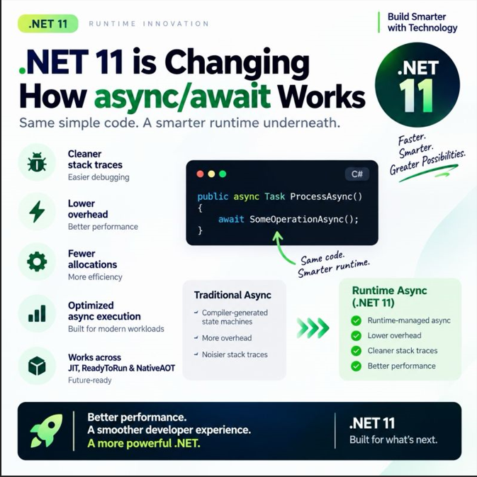

.NET 11 · Runtime Async
async/await در .NET 11؛ همان کد، اجرای هوشمندتر
فرض کنید برنامه منتظر پاسخ یک سرویس است. همچنان با await نتیجه را دریافت میکنید؛ تغییر تصویر دربارهٔ سازوکاری است که توقف و ادامهٔ متد را مدیریت میکند. از یک مثال ساده شروع میکنیم و بعد ادعاهای تصویر را دقیقتر میخوانیم.
از رفتار قابل مشاهده شروع کنیم
منتظر ماندن بدون مسدودکردن Thread
Thread مسیر اجرای دستورهای برنامه است. Task انجام یک عملیات را نمایندگی میکند و await اجازه میدهد نتیجهٔ آن را پس از پایان دریافت کنیم، بدون اینکه برای انتظار، Thread اجراکننده را مسدود کنیم. این برنامهٔ کوچک را در یک پروژهٔ Console قرار دهید:
using System;
using System.Threading.Tasks;
Console.WriteLine("Before");
await ProcessAsync();
Console.WriteLine("After");
static async Task ProcessAsync()
{
await Task.Delay(1000);
Console.WriteLine("Completed");
}ابتدا Before چاپ میشود. حدود یک ثانیه بعد Completed و سپس After را میبینید. Task.Delay برای این مثال نقش انتظار را دارد؛ زمان دقیق ادامهٔ اجرا به زمانبندی سیستم هم وابسته است.
این ترتیب نشان میدهد await دستور بعدی همان مسیر را تا پایان عملیات جلو نمیبرد؛ اما Thread را برای انتظار نگه نمیدارد. همچنین async بهتنهایی Thread جدید نمیسازد. اگر عملیات هنگام رسیدن به await تمام شده باشد، نیازی به توقف متد نیست. مرجع رسمی await و Async/Await FAQ این رفتار را توضیح میدهند.
پشت همین کد چه اتفاقی میافتد؟
وقتی یک متد متوقف میشود، باید اطلاعات لازم برای ادامهٔ آن حفظ شود: کجا بودیم و کدام مقدارها را بعداً لازم داریم؟ در مدل رایج، C# Compiler کد را به یک State Machine تبدیل میکند؛ ساختاری که وضعیت اجرای متد را نگه میدارد. کد تولیدشده پس از پایان انتظار از محل مناسب ادامه مییابد. این ساختار الزاماً یک Class با Allocation جداگانه برای هر فراخوانی نیست؛ جزئیات به مسیر اجرا و نوع ساخت وابسته است. توضیح سازوکار سنتی در .NET Blog.
Runtime محیط اجرای برنامه است. در Runtime Async، Compiler برای متدهای واجد شرایط، دستورهای میانی یا IL کوچکتری با اطلاعات لازم برای توقف تولید میکند. JIT، بخشی که هنگام اجرا کد را به دستورهای ماشین تبدیل میکند، مسئولیت بیشتری در تبدیل و اجرای این متدها میگیرد. پس Compiler حذف نشده؛ تقسیم کار تغییر کرده است. شرح Runtime Async در بررسی عملکرد .NET 11.
برای مثال بالا، انتظار ما از نتیجه تغییر نمیکند: همان سه پیام و همان ترتیب. ارزش تغییر در هزینهٔ اجرای این رفتار است، نه در نوشتن یک Keyword تازه. این تفاوت توضیح میدهد چرا شعار «همان کد» در تصویر معنادار است.
پنج پیام تصویر را چطور بخوانیم؟

Stack Trace فهرست فراخوانیهای قابل مشاهده است؛ Overhead هزینهٔ اضافی سازوکار اجرا و Allocation تخصیص حافظه برای دادههاست.
- Stack Trace خواناتر: بهبود اصلی در Live Stack Trace داخل Debugger و Profiler است. نمایش Exception از قبل پاکسازیهایی داشته؛ نباید هر دو را یکسان دانست.
- Overhead کمتر: مدیریت مستقیمتر توقف و ادامه، فرصت کاهش کارهای واسطهای را میدهد.
- Allocation کمتر: استفادهٔ مجدد از اطلاعات ادامهٔ اجرا میتواند فشار تخصیص حافظه را کم کند؛ ادعای «بدون تخصیص» نداریم.
- اجرای بهینهتر: نتیجه به مسیر کد وابسته است؛ سرعت بیشتر در همهٔ برنامهها تضمین نمیشود.
- فراتر از JIT: پشتیبانی از ReadyToRun، با بخشی از کد آمادهٔ اجرا، و NativeAOT، با تولید کد Native پیش از اجرا، نیز مستند شده است.
مبنای این تفکیک: مستندات رسمی Runtime Async.
اجرای آزمایشی با تنظیم صریح
با SDK سازگار با .NET 11، تنظیمهای زیر را در فایل پروژهٔ آزمایشی قرار دهید. نمونهٔ قبلی محتوای Program.cs است.
<Project Sdk="Microsoft.NET.Sdk">
<PropertyGroup>
<OutputType>Exe</OutputType>
<TargetFramework>net11.0</TargetFramework>
<Features>runtime-async=on</Features>
</PropertyGroup>
</Project>سپس با dotnet run -c Release اجرا کنید. این نمونه فقط رفتار را نشان میدهد و Benchmark نیست. روش فعالسازی از راهنمای رسمی آمده است.
برای برنامهٔ خودمان چه نتیجهای بگیریم؟
فرض کنید دریافت پاسخ سرویس بیرونی ۵۰۰ میلیثانیه زمان میبرد. کاهش هزینهٔ مدیریت await آن سرویس را سریعتر نمیکند. برای دیدن اثر، باید هزینهٔ محلی برنامه را از زمان انتظار شبکه جدا کنید. این استدلال دلیل پرهیز از وعدهٔ یک درصد ثابت برای همهٔ برنامههاست.
برای ارزیابی، دو ساخت با SDK و ورودی یکسان تهیه کنید: یکی با تنظیم صریح فعالسازی و دیگری با تنظیم غیرفعالسازی مستند همان نسخه. پس از چند اجرای اولیه، زمان پاسخ، تعداد عملیات در ثانیه و حافظهٔ تخصیصیافته را مقایسه کنید. مسیر دارای عملیات ازقبلتمامشده و مسیر دارای انتظار واقعی را جدا بسنجید؛ ترکیب آنها ممکن است علت تغییر را پنهان کند.
در کنار عددها، نتیجهٔ عملیات، لغو درخواست و انتشار خطا را هم بررسی کنید. اگر برنامه پس از مهاجرت پاسخ اشتباه بدهد، کاهش زمان اجرا ارزشی ندارد. برای کد کاربردی، پیام تصویر این است: الگوی آشنای async/await را درست به کار ببرید و اثر تغییر زیرساخت را روی کار واقعی خود اندازه بگیرید.